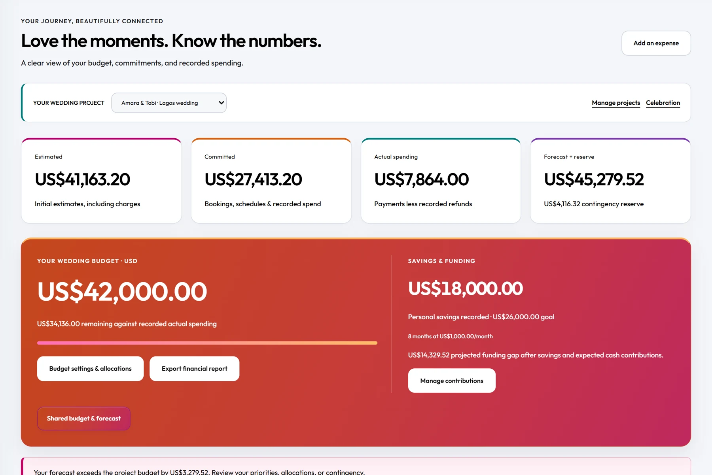

A WHOLE BRIDAL WORLD
Every detail.
Beautifully connected.
Discover inspiration, organize your plans, manage your budget, shop your favorites, and create unforgettable celebrations—all from one beautiful space.
THE PROFESSIONALSThe right people make your vision possible.
Keep the professionals who will bring your celebration to life in one organized vendor directory.
Record venues, planners, photographers, makeup artists, fashion designers, caterers, decorators, florists, and entertainers.
From your first inquiry to the final delivery, keep your vendor relationships organized.
Compare proposals, keep contract documents, link bookings to your budget and coordinate the logistics behind every service.
Explore wedding vendors
THE FINISHING TOUCHESEverything you've been saving. Everything you still need.
Your dream dress, the perfect shoes, bridal accessories, traditional attire, bridesmaid outfits, decor, beauty essentials, and thoughtful finishing touches.
Build wishlists, compare recorded merchant prices and sizing, organize order and return details, and plan event outfits, fittings and alterations.
Know what you've bought, what still needs to be purchased, and how your recorded spending fits into your wedding budget.
Explore bridal shopping
THE NUMBERSBeautiful weddings deserve thoughtful budgets.

Your wedding budget shouldn't live in scattered spreadsheets, payment screenshots, and conversations.
Cobridey gives you a clearer picture of your wedding finances.
Set your overall budget, allocate spending to different celebrations, monitor vendor payments, track purchases, and see how much you've committed or spent.
Planning with contributions from family or loved ones? Track cash pledges, in-kind sponsorships, receipts, and acknowledgements. Private name labels are available; shared financial access controls require a connected backend.
Create your wedding budget
THE ANTICIPATIONThere's so much to look forward to.
THE JOY IS IN THE JOURNEYGood things
are getting closer.
- The first fittingA little more real.
- Your celebrationThe moment you've imagined.
- The honeymoonA beautiful next chapter.
Whether your wedding date is confirmed or still a beautiful possibility, Cobridey helps you see the journey ahead.
Create a personalized countdown, explore projected wedding timelines, track milestones, and stay ahead of important preparations.
From your first fitting and bridal shower to your final vendor confirmation and wedding morning, know what's coming next.
And when your plans change? Your timeline can change with you.
Create your countdown Your vendor records, shopping lists, budgets, contributions, installment schedules and timelines each have their own space, with related planning records kept together.